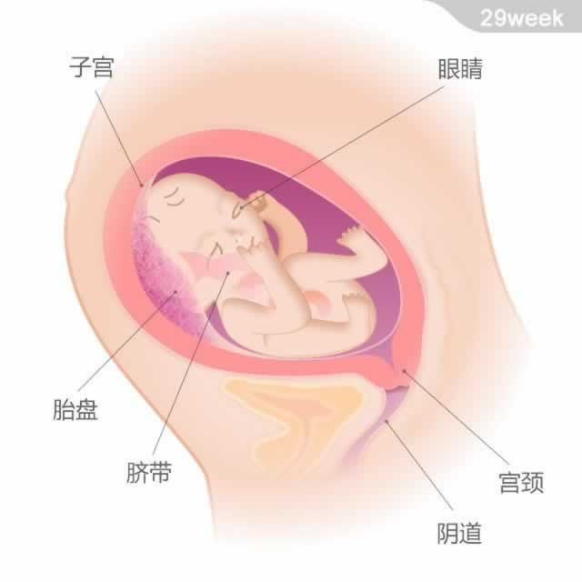

 宝宝的重量约为1.36千克，从头部到臀部的长度约为27厘米。 最近，宝宝身长的增长速度会渐趋放缓，而体重则会持续增加，直到出生。因为宝宝不断长大，他在子宫内的活动空间也相对越来越小，羊水会有所减少。他的胎毛在逐渐消失，头发却变得浓密起来。 现在，宝宝的双眼可以开合，能分辨出光明和黑暗了。如果此时你用手电筒照射腹部，他会伸出手试图触摸光线。宝宝出生后，睁开眼时对光的变化会有所反应，但开始时只能看到大约15~30厘米内的东西。